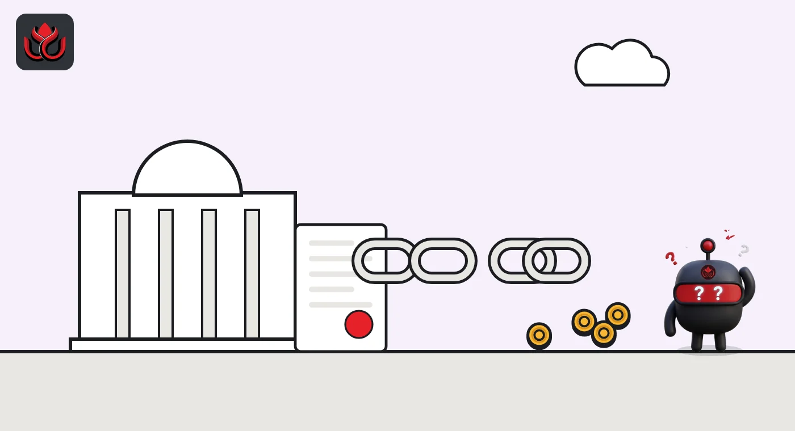
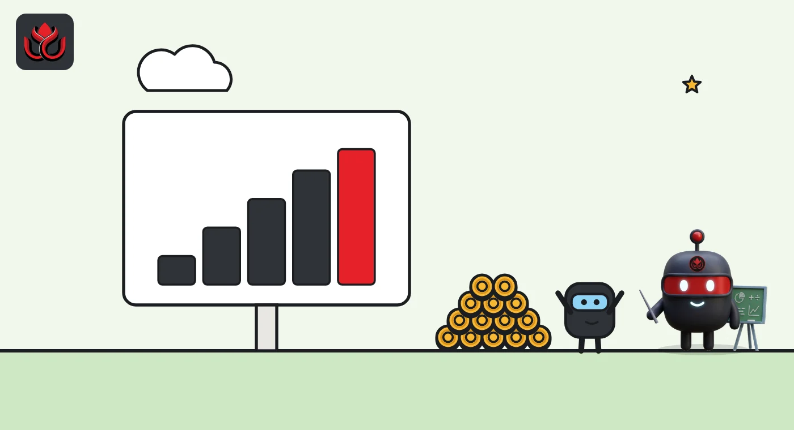

A7A5 stablecoin network moved $179 billion. FinCEN wants US banks and crypto firms out
A Treasury proposal would bar about 347,926 US financial institutions, crypto exchanges included, from moving money for the Russia-linked A7 network's front companies. Public comments close November 4, 2026.
Key points
- FinCEN proposed on October 1, 2026, to ban US financial institutions from transmittals of funds involving the A7 network's foreign "Sub-Agents", with comments due November 4, 2026.
- FinCEN says more than 180 entities processed A7A5 ruble stablecoin transactions worth at least $179.1 billion between February 2025 and June 2026.
- The rule would cover about 347,926 US institutions, including 332,068 money services businesses such as crypto exchanges, and it explicitly reaches stablecoin and other crypto transfers.
What FinCEN proposed
The US Treasury's Financial Crimes Enforcement Network (FinCEN) has proposed a ban on certain transfers involving the A7 network, the Russia-linked payment system behind the A7A5 ruble stablecoin. FinCEN says more than 180 entities processed at least $179.1 billion in A7A5 transactions between February 2025 and June 2026. The notice of proposed rulemaking was published in the Federal Register on October 5, 2026, and written comments are due on or before November 4, 2026 (docket FINCEN-2026-0265).
FinCEN finds that transactions involving any non-US company controlled by the A7 network are a "primary money laundering concern" tied to Russian illicit finance. It calls the network "a purpose-built mechanism to evade Western sanctions", and says it has also served persons linked to Iran.
The proposal came as part of a package FinCEN announced on October 1, 2026 under the name Operation Economic Outcast. The same day, Treasury's Office of Foreign Assets Control (OFAC) sanctioned the A7 network as a significant transnational criminal organization, and FinCEN issued an alert to help firms spot related activity.
The legal tool behind the ban
FinCEN is using section 9714(a) of the Combating Russian Money Laundering Act, as amended in 2021. That law lets Treasury apply the same special measures found in section 311 of the USA PATRIOT Act (31 U.S.C. 5318A) to Russia-linked money laundering threats.
Section 311 orders usually target foreign banks by cutting their correspondent accounts, the accounts one bank holds for another. Here FinCEN says it looked at the five standard special measures and found them inadequate. It instead proposes a different tool under section 9714(a): a prohibition on transmittals of funds involving the network's Sub-Agents. Sub-Agents are the front companies FinCEN says the network uses to move money for clients abroad.
The proposal defines the A7 network to include A7 LLC, A71 LLC, A7 Agent LLC, Old Vector LLC, the Garantex and Grinex exchanges, InDeFi Bank, Mendeleev, Ilan Shor and the Russian state bank PSB. FinCEN says Old Vector, which it describes as Kyrgyzstan-registered and OFAC-sanctioned, issues A7A5, and that each A7A5 token is backed by ruble deposits at PSB.

What it means for US banks and crypto firms
The rule would apply to every "financial institution" in FinCEN's general definition. FinCEN estimates that is about 347,926 institutions, including 332,068 money services businesses (MSBs), 8,988 banks and 3,277 broker-dealers. Crypto exchanges and over-the-counter brokers that act as money transmitters are MSBs under US law, and the proposal treats A7A5 as convertible virtual currency.
- Ban: no transmittal of funds to or from a listed Sub-Agent, or to or from accounts or crypto addresses run by or for one. Because a firm cannot always stop crypto sent to it, the proposal lets institutions reject such transfers.
- Notice: if a firm knows or has reason to believe a transfer involves a Sub-Agent, it must tell affected customers it deals with directly.
- Screening: risk-based due diligence, such as sanctions screening software, to catch Sub-Agents as senders, recipients or references.
- Secret list: FinCEN would share the full Sub-Agent list only with covered institutions through its secure FI-Portal, and listed entities could petition for removal.
Where OFAC blocking rules already apply, FinCEN says blocking the funds also satisfies the proposed rule. No new reports are proposed beyond existing duties. For more on what exchanges already send with transfers, see our travel rule explainer.
How big FinCEN says the network is
The proposal lays out how large FinCEN believes the network has grown since its formal launch in September 2024. It says that as of January 2026 the network claimed more than 2,000 transactions a day and a historical volume above 7.5 trillion rubles, which FinCEN puts at $91.5 billion.
Beyond the $179.1 billion in A7A5 transactions, FinCEN describes the network's reach. As of June 2026, Sub-Agents held accounts at about 435 financial institutions in at least 83 countries, and they processed more than $17 billion in US dollar transactions between January 2025 and June 2026. FinCEN also says one Sub-Agent and a sister company received nearly $140 million from entities involved in Iranian sanctions evasion between July 2023 and October 2025.
A7 network flows cited by FinCEN
US$ billion
Periods differ by row. Source: FinCEN, notice of proposed rulemaking, FR Doc. 2026-20371

Red flags for crypto firms
The companion FinCEN alert (FIN-2026-Alert007) asks firms to file suspicious activity reports with the key term "FIN-2026-A7NETWORK". For crypto businesses, its red flags include customers who trade or offer A7A5 or wrapped versions of it, stablecoin sends to known or suspected Sub-Agents, and stablecoin payments for goods rarely paid in crypto, such as oil products or dual-use items.
It also flags over-the-counter desks or unregistered money transmitters that grow suddenly in A7-linked jurisdictions with little history. For banks, it points to new shell companies, especially in the Kyrgyz Republic, moving large short-term volumes with no clear business purpose. Treasury has used crypto-specific listings in other recent cases too, as in its October 28 North Korea action.
Timeline
A7 network formally launched, per FinCEN
Garantex moves its funds to successor exchange Grinex after US law enforcement action, per FinCEN's alert
OFAC sanctions the A7 network; FinCEN issues proposal and alert
Proposal published in the Federal Register
Deadline for public comments
LC Insight analysis
This section is our reading of the facts above, not a statement of fact.
- We think the crypto angle is the real shift. By writing crypto addresses and stablecoin transfers into the ban, FinCEN puts US exchanges and OTC desks on the same footing as banks, and missing an indirect A7A5 link gets more costly.
- The non-public Sub-Agent list is likely to be the hardest part for smaller firms. Only covered institutions with FI-Portal access would see it, so screening vendors and exchanges may struggle to work from the same data.
- If the final rule stays close to the proposal, the likely result is A7A5 liquidity pushed further from any venue with US ties. That would not kill the token, but it would shrink the on- and off-ramps open to it.
What's next
- Comments filed on docket FINCEN-2026-0265 by banks, exchanges and trade groups
- A final rule and its effective date
- Stablecoin issuers or exchanges acting on addresses linked to A7A5
- Matching measures by the UK or EU
Disclaimer. This article is based on public information and the sources listed below as of the update time shown. It is for information only and is not investment, legal or tax advice. Figures may change as companies and authorities publish new data.
Sources
- Federal Register, Proposal of Special Measure Prohibiting the Transmittal of Funds Regarding Transactions Involving the A7 Network's Sub-Agents (October 5, 2026)
- Federal Register public inspection copy, FR Doc. 2026-20371 (PDF)
- FinCEN, Operation Economic Outcast news release (October 1, 2026)
- FinCEN, Alert on the A7 Network, FIN-2026-Alert007 (October 1, 2026)
- Regulations.gov, docket FINCEN-2026-0265